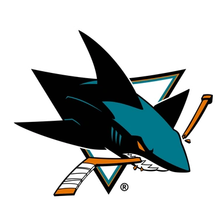
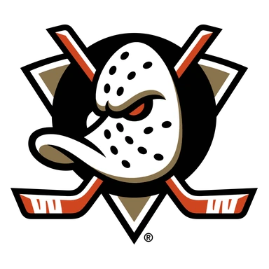
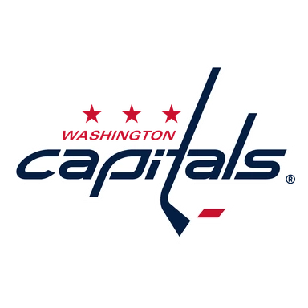
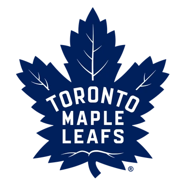

Оттава — Колорадо итог матча 13 ноября
Статистика матча
ОттаваКолорадо
- 26Броски в створ29
- 0 из 5Голы в большинстве2 из 5
- 10Штрафные минуты10
- 57 %Выигранные вбрасывания43 %
- 22Силовые приёмы18
- 24Блокированные броски11
- 5Отборы3
- 14Потери19
Удаления по минутам 10
- 1-й период
- Brett KulakЗадержка клюшкой2 мин
- Claude GirouxИгра высоко поднятой клюшкой2 мин
- 2-й период
- Thomas ChabotТолчок клюшкой2 мин
- Tyler KlevenУдар клюшкой2 мин
- Nazem KadriБлокировка2 мин
- Brett KulakУдар клюшкой2 мин
- Dylan CozensЗадержка соперника2 мин
- 3-й период
- Brett KulakЗадержка клюшкой2 мин
- Fedor SvechkovГрубость2 мин
- Fabian ZetterlundЗадержка клюшкой2 мин
Данные лиги.
- ТурнирНХЛ
Коротко о матче
Оттава — Колорадо 4:3: хозяева победили в овертайме.
По форме команды были близки: в пяти последних матчах у обеих по 3 победы. Слабое место — оборона: Колорадо — в среднем 3,0 пропущенной шайбы за игру в этих пяти матчах.
Обе команды играют результативно: больше 5,5 шайб набиралось в 11 из 16 их последних матчей. Стоит учесть и площадку: дома Оттава — 6 побед в 9 матчах, на выезде Колорадо — 4 победы в 9. До этого команды встречались 29 января 2026 года: Оттава — Колорадо 5:2.
Форма: последние матчи
Оттава 3 победы из 5

В5:1
П3:6 В2:1
В2:1- В4:2

П2:3
Колорадо 3 победы из 5
 В5:2
В5:2 П2:7
П2:7 П2:3
П2:3 В4:0
В4:0
В6:3
Личные встречи
- Оттава5:2Колорадо
- Колорадо8:2Оттава
- Оттава1:5Колорадо
- Колорадо5:4Оттава
Положение в таблице
| Команда | Место | И | В | П | Голы | Очки |
|---|---|---|---|---|---|---|
| Оттава | 6 | 20 | 12 | 8 | 64:60 | 26 |
| Колорадо | 5 | 20 | 11 | 9 | 81:63 | 25 |
Куда дальше
Все прогнозы дня — в TelegramПрогнозы на КХЛ, НХЛ и футбол, итоги каждое утро. Бесплатно.
Открыть каналМатериалы носят информационный характер и не гарантируют результат. Реклама букмекеров на сайте не размещается. Сайт только для совершеннолетних (18+).